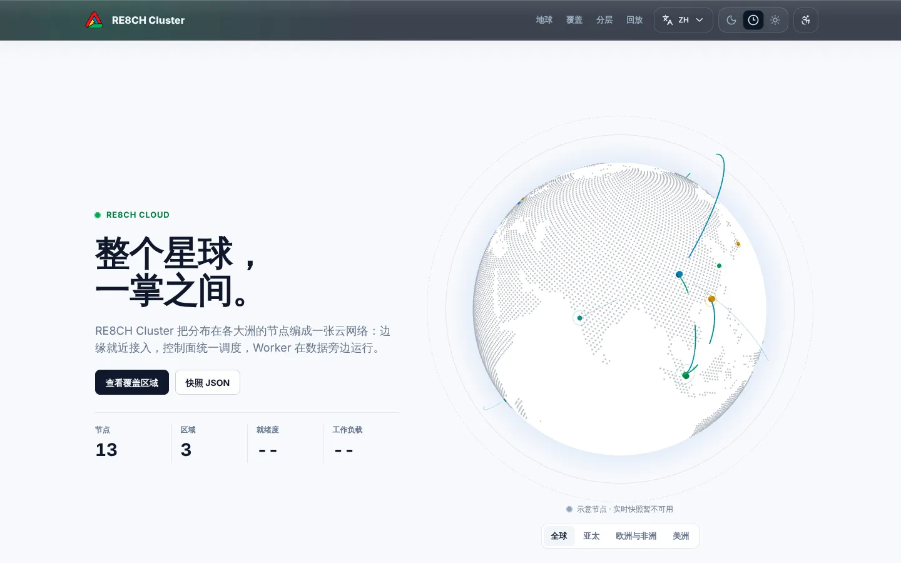
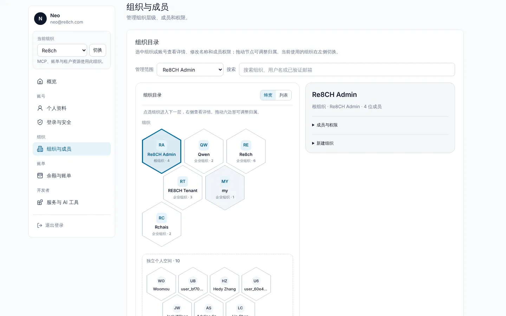
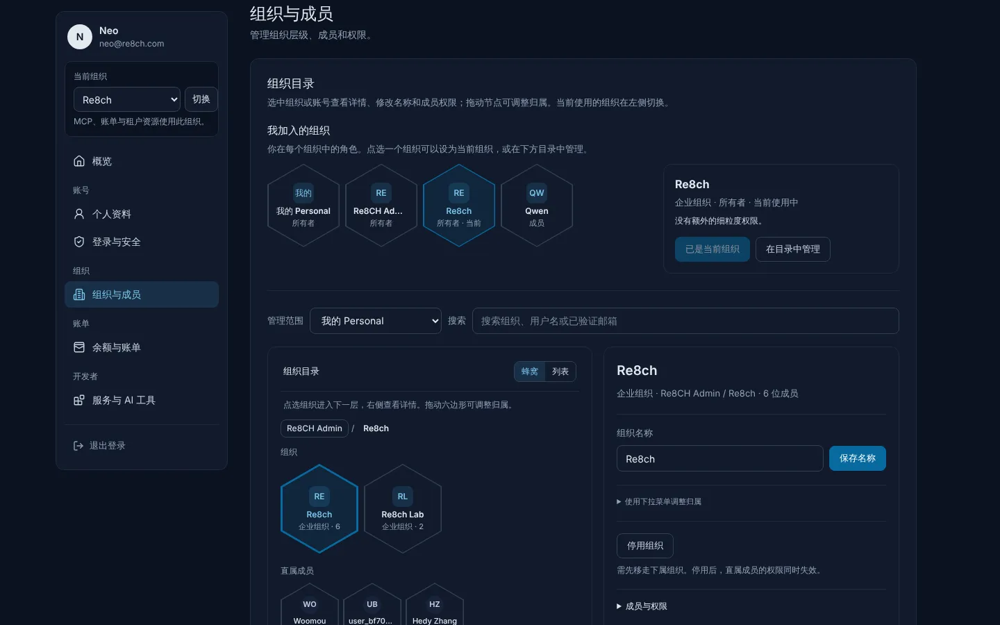
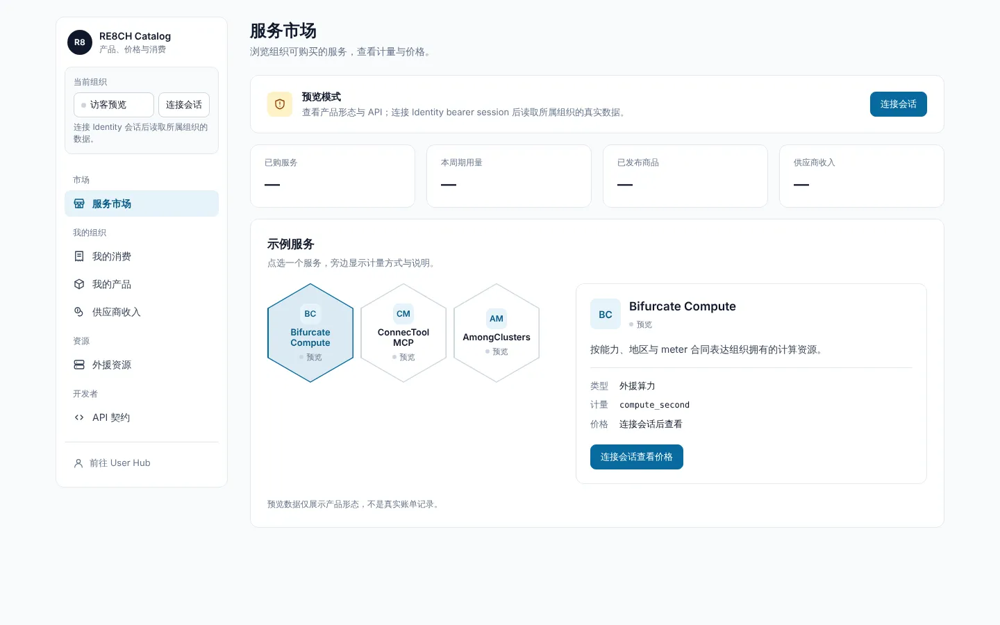
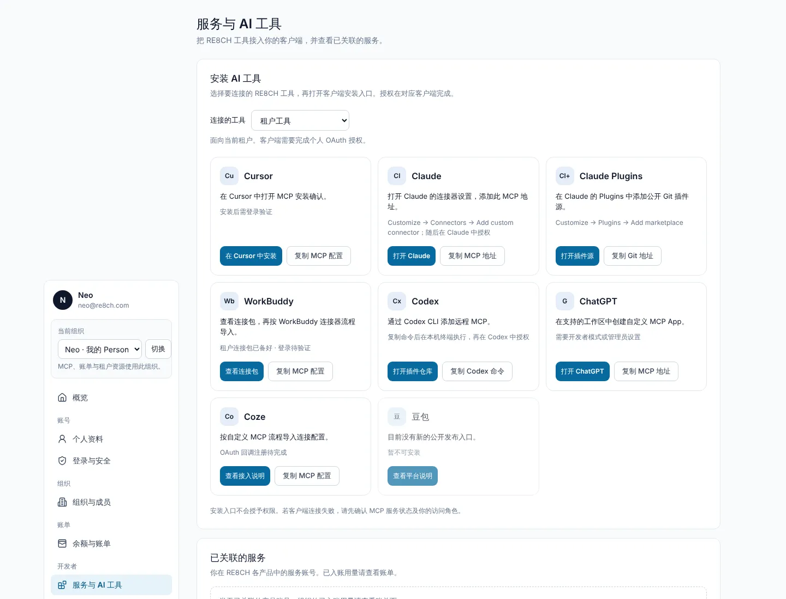
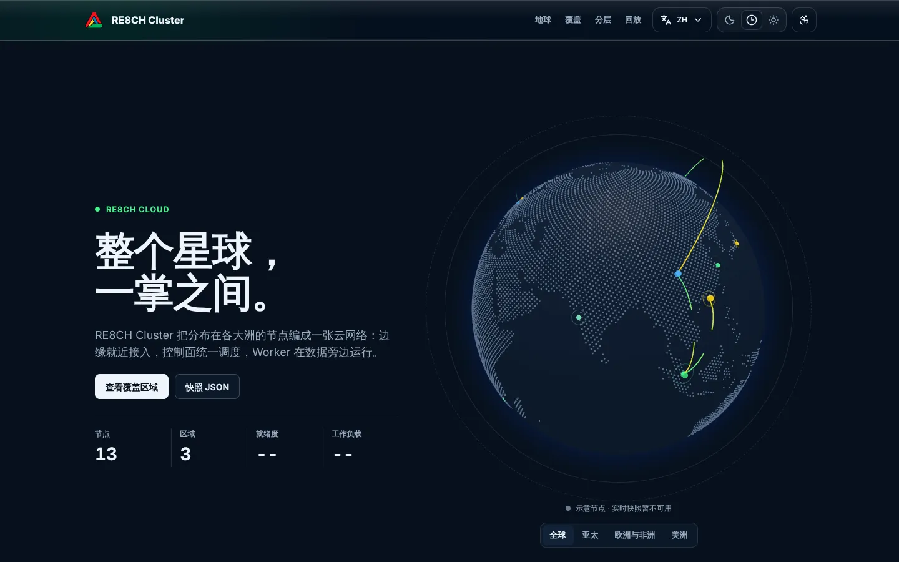

商标组合
图形标志与以下四个名称之一组合使用，名称位于标志右侧并垂直居中。
01
标志
六个变体覆盖彩色、灰度与反色。浅色背景用黑描边版本，深色背景用反色版本；空间紧凑或尺寸很小时用无描边版本。
推荐
- 按原始比例缩放，四周留出至少半个标志高度的空白
- 深色背景使用 invert 变体
- 网页中引用 CDN 上的 SVG，并带上版本参数
避免
- 拉伸、旋转、重新配色或替换色块顺序
- 给标志加投影、描边光晕或渐变
- 放在高饱和或花纹背景上
02
色彩
标志的四个色块各自对应一类产品；界面则以冷灰中性色为底，只用一种操作蓝。悬停色块可以在标志上看到它的位置，点击复制色值。
界面中性色
深色模式
03
字体
使用系统字体栈，不额外加载网络字体：中文落到苹方或微软雅黑，拉丁字母优先 Inter。数字和代码使用等宽字体。
Inter, ui-sans-serif, system-ui, -apple-system, "PingFang SC", "Microsoft YaHei", sans-serif
ui-monospace, SFMono-Regular, Menlo, Consolas, monospace
04
产品标识
每个产品都有自己的标识，取自母品牌标志的色块与几何语言。点开卡片查看全部变体和下载地址。
05
组织头像
RE8CH 企业下各 GitHub 组织的头像。黄色虚线环表示与同名组织相关、但独立管理的组织。
06
图标
产品专用的界面图标集。通用界面图标使用 Lucide，线宽 2、圆角端点，与产品标识的笔画保持一致。
07
界面元素
User Hub、Catalog 和 Cluster 共用的基础元素。边框代替阴影，圆角 8 到 12 像素，控件尺寸紧凑。
按钮
输入
分段与状态
分组侧栏
蜂窝选择器
08
共享组件
所有产品网站从 CDN 加载同一套导航和页脚 Web Component，语言、主题和无障碍偏好在两者之间同步。本页顶部与底部就是实际运行的组件。
<re8ch-navigator>
<re8ch-product-hero> · <re8ch-layer-stack>
打开示例
产品官网的首屏与三层架构图组件，位于 UI/re8ch-product-system/v1。
09
标志动效
<re8ch-logo-motion> 是零依赖的动效组件，用于加载、成功、出错等状态。系统开启“减少动态效果”时会自动停用循环动画。点击卡片重播。
10
产品界面
按照这套规范完成的产品页面，可以作为新页面的参考。






11
设计准则
新页面上线前对照检查。完整版本见仓库中的 PRODUCT_SITE_DESIGN_GUIDELINES.md。
- 浅色背景为默认背景用 #F8FAFC，深色模式用受控的深蓝灰，不用纯黑。
- 边框代替阴影卡片和面板用 1px 边框区分层级，重阴影只留给弹出层。
- 不用装饰性色块不加模糊光斑、渐变泡泡或无信息的插画背景。
- 卡片不嵌套一张卡片里只放内容和控件，不再套一层卡片。
- 产品标识优先产品页以产品标识为页面身份，RE8CH 通过导航、页脚和法律信息出现。
- 语言不用国旗语言菜单用文字和书写系统图标，不使用国旗。
- 焦点可见所有控件可用键盘操作，焦点框清晰可见。
- 资源带版本号CDN 上的组件或标识变化后，引用处更新 ?v= 参数，避免边缘缓存旧文件。